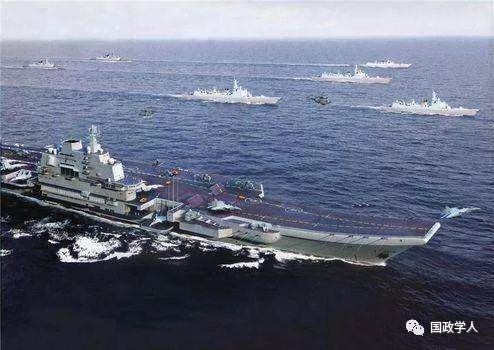

收录于合集

简 介
【 作者 】孙婵，海军指挥学院《海军学术研究》编辑部编辑；冯梁，海军指挥学院战略战役系教授、博士研究生导师。
【 来源 】《世界经济与政治论坛》2019年第1期
【 编辑】 邢戎
【 审核 】李甜 丁伟航
摘要
国家海洋战略是指导国家海洋事业发展和保障国家海洋利益安全的总体方略。海洋安全战略的谋划与制定是多种因素共同作用的结果。其中，海洋安全利益是海洋安全战略制定和实施的出发点和归宿点。海洋地缘环境是决定海洋安全环境最直接和主要的外部因素。海洋安全力量是海洋安全战略的主要实施力量。海洋历史与文化传统影响着海洋安全战略的特性。它们彼此联系，相互作用，共同规范着海洋安全战略的发展方向。
关键词： 战略；海洋；安全

正 文
“海洋安全”（Maritime Security）是近年来国际关系研究的一个热词。“9·11”事件之后，美国率先在2005年制订了海洋安全战略，这份战略文件除反恐目标之外，比较全面的考虑了影响海洋安全的种种威胁。进入2010年代一些国家和地区组织纷纷出台海洋安全战略，将海洋安全战略问题进一步向前推进，也带来了海洋安全战略的研究热潮，从术语界定到国家和地区海洋战略特点，众说纷纭，颇有必要对其相关理论和实际问题进行梳理，尤其需要结合我国实际对海洋安全战略的主要影响因素进行探析。
海洋安全战略的制定和谋划是主观能动性活动，而非个人主观意志的产物，是多种因素共同作用影响的结果，其中， 海洋安全利益是影响海洋安全战略的根 本性因素，是海洋安全战略制定和实施的出发点和归宿点。海洋地缘环境是决定海洋安全环境最直接和主要的外部因素，对海洋安全战略的制定有着重要影响。海洋安全力量是海洋安全战略的主要实施力量，对海洋安全战略形势的研判和安全战略目标的确定等具有决定性的影响。海洋历史与文化传统传承着一个国家或民族的海洋战略思维，影响着海洋安全战略的特性。
一、海洋安全利益因素
海洋安全利益是国家保障海上方向生存和发展的基本需求的总和，是影响 和制约国家安全战略的最基本因素，也是研究和分析海洋安全战略的基点。 中国的海洋安全利益不仅包含政治与军事安全，更有经济安全、社会安全和生态安全等非传统领域的安全内涵。此外，随着海洋强国战略和“一带一路”构想的推进，中国对保持和平、安宁、有序的海上公共秩序的需求更加强烈，海洋社会安全利益进一步凸显。
（一）海洋安全利益是海洋安全战略的出发点
克劳塞维茨曾说，战略是为政治服务的，而所谓政治无非国家利益的代表。邓小平也指出：“考虑国与国之间的关系主要应该从国家自身的战略利益出发……以自己的国家利益为最高准则来谈问题和处理问题。”在这里，邓小平明确地指出了国家利益在国际战略决策中的地位和作用。任何战略思想、方案、行动的提出都是为特定国家利益服务的，国家利益也正是国家战略制定时的原动力所在。
海洋利益作为海洋方向的国家利益，是全体国民利益在海洋方向的最高表现，这使得海洋安全战略的制定与实施具有了广泛的社会基础。在制定海洋安全战略时，应在分析和判断战略环境和面临的危险时，把海洋安全利益作为基本依据和战略指导的出发点。战略谋划要从国家间海洋利益关系与利益格局的变化中，判断海洋安全利益所受挑战的程度和方式，确定主要威胁方向、性质和等级，并做出相应的战略决策，采取相应的战略行动。
（二）海洋安全利益是海洋安全战略的归宿
海洋安全利益决定着海洋安全战略目标，它反映的是国家在海洋安全领域的利益需求，也是维护海洋安全所要达到的目的指标，是海洋安全战略的最终落脚点。 海洋安全利益作为一种价值取向，作用于海洋安全战略制定和实施的全过程。 也就是说，在制定和实施海洋安全战略时，应以海洋安全利益衡量和指导一切。例如，各国对海洋安全形势的判断离不开对自身海洋安全利益的认识和分析。因而，海上战略形势虽是客观的，但却因各国海洋安全利益需求的变化而时刻发生着改变。海洋安全战略指导方针或实施方案是否正确可行，最终要以对海洋安全利益的利害、损益为尺度来判定。当安全形势不利于谋求自身的海洋安全利益时，就需要对海洋安全战略做出调整，以便更好地维护自身的海洋安全利益。
（三）海洋安全利益是调整国家海洋安全战略关系的重要因素
海洋安全利益决定了国家间的海洋安全战略关系。虽然海洋占据着全球地表的71%，且多国依据《联合国海洋法公约》制定了毗连区、专属经济区和大陆架等，明确各自在海洋方向的主权权利和管辖权，但仍有很多海洋利益的交汇区域。许多国家的海洋安全利益在交汇区域相互渗透、相互依存，而在面对诸如生态危机、环境污染、打击海盗等世界性问题时，所重叠区域的海洋利益表现出“共同性”。倘若对区域内的海洋安全利益的要求完全不同，如彼此存在岛礁主权争议时，海洋利益便表现出很大的“冲突性”。 “共同性”和“冲突性”决定了与此利益相关的国家间海洋安全战略关系的联合或是对立性质。 当然，国家间的海洋安全战略关系并非一成不变，当海洋安全利益冲突性减弱后，海洋安全战略关系就会趋于缓和。同理，当共同性的海洋安全利益减少后，不同国家间海洋安全战略关系的联合就很容易打破。
海洋安全利益也会塑造国家间的海洋安全关系。海洋安全利益中的共同利益通常建立在利益交往的补偿性基础上；而冲突利益则建立在利益交往的排他性基础上，即“我所得即你所失，我所失即你所得”。如随着“一带一路”倡议构想的推进，中国与相关国家间的冲突性利益可能会有增大的趋势，这必然会导致海洋安全关系的紧张。因此，在塑造国家间海洋安全关系时，应注意趋利避害，拓宽共同利益。一是牢牢把握本国的海洋安全利益，并以此为塑造国家间海洋安全战略关系的指导原则；二是清楚了解所涉及国家的海洋安全利益及其可能的海洋安全战略；三是要合理选择与斡旋，放弃次要利益，抓准核心利益，通过政治、经济、军事、外交等多种途径，营造“有利”的国家间海洋安全战略关系，以换取长远利益。
二、海洋地缘环境因素
海洋地缘环境是一国所面临的海洋地理环境，及在此基础上的国家间政治格局和战略情势的总和。 海洋地理环境的基本要素包括海域范围位置、水文气象要素、岛屿分布、海洋资源、远洋航线等，它是海洋自然条件的总和。海洋政治格局及其战略情势，则是基于海洋地理环境而形成的国家间关系的总体态势，及各国在政治格局中所面对的政治、经济、安全等形势。海洋地理环境与各国之间的互动形成了海洋政治格局，它也是政治格局发展和演变的基础。通过剖析海洋地理环境和海洋政治格局的发展演变，才能针对各国所面临的战略情势，制定出全局性、指导性的海洋安全战略。
（一）海洋地缘环境是评估海洋安全形势的重要依据
近现代世界历史的发展表明，地理位置、国土自然形态和综合实力，对一国地缘战略格局和自身国家安全的形成有着重要影响，意即“国家的战略疆域、地理位置、接壤情况以及在此基础上形成的地缘政治关系本身就具有极大的战略意义，直接影响着国家安全”。而海洋安全形势，则受一国与海洋的位置关系、海上实力以及与海上邻国的利益关系等海洋地缘要素的影响。海洋地缘环境首先表现为一国与海洋的位置关系，这一位置关系对其海洋安全形势有着最基本的影响。从全球范围来看，陆少海多，海洋包围着陆地，根据各国所处的地理位置和自然结构的差别，有了海岛国家、大陆濒海国和内陆国之分，而海洋安全形势则只针对前两者而言。海岛国家多扼守重要海上咽喉要道，其海洋地缘环境使得其在海洋安全形势的动态变化中有一定的主动性。正如海权理论家马汉所指出的：“如果一个国家的地理位置……大自然使它位于在便于进入公海的通道上，同时还令它控制了一条世界主要贸易通道，那么它的地理位置就具有重要的战略作用。” 大陆濒海国虽然处于海陆便利的地理位置，却容易腹背受敌。它多拥有漫长的海岸线和优良的港湾，掌握着所辖海域海洋安全形势的主动权。但因陆上和海上均有邻国，从而缺少 “安全剩余”，易陷入两面夹击的境地。特别是当濒海国家的海上邻国较多、海洋权益争端较多时，根据距离衰减率，即国家间的作用力和影响随着距离的增大而减少，其海洋安全形势就会相对复杂。
其次，海洋地缘环境也表现为一国与他国的海上实力对比关系，一国的海上实力对其海洋安全形势有着重要的主导作用。 克劳塞维茨说：“只有在国家实力相等的条件下，法律和正义才会扮演角色；否则，强者会为所欲为，弱者将忍气吞声。”尽管人类在物质文明方面飞速发展，但“实力政治”仍然是迄今为止国际政治最基本的逻辑。因此，海上实力对比关系往往直接决定着一国海洋安全形势的优劣。根据实力制衡原理，如果他国的海上力量大到己方难以制衡时，就可能对己方的海洋安全形势构成威胁，其海洋安全形势也就可能趋于恶化。
周边国家的政策取向是海洋地缘环境的重要组成部分，它对评估海洋安全形势有着重要影响。 假使一国周边出现一个充满敌意、对海权的主张近似侵略和扩张性质的国家，那么其海洋安全形势就会变得复杂严峻。对周边国家政策的判断通常要从全球、地区和周边三个层次进行分析。全球地缘战略格局的形成，如“维也纳体系”“雅尔塔体系”、冷战时的两极格局等，对全球范围内的国家海洋安全政策调整有着关键性的作用。例如，一旦新的全球地缘战略格局形成，各国会对自身在格局中的地位作用和所面临的海洋安全形势进行重新分析，寻找新的海洋安全利益的共同点和冲突点，从而对海洋安全战略做出调整。从地区层次上看，类似欧盟、东盟、北约等泛区域或次区域组织的成立和发展，不仅影响区域性组织内部国家间的关系，而且对相关国家的海洋安全政策调整都有着重要影响。区域性组织往往将多国的国家利益进行捆绑，使得区域内国家的共同利益扩大，冲突性利益降低，使得其对各自海洋安全利益的评判和海洋地缘环境的评估有了新的认识；而对于区域外国家而言，原有的利益空间可能会被压缩，与域内国家的关系和海洋安全利益需求需要从区域性组织的角度进行重新考虑，从而对海洋安全战略做出调整。周边的海洋地缘环境，则需要全面深入认识本国周边的海洋地缘要素，包括周围水域，尤其是重要港口、海峡、航线和战略通道，周边国家政策等，准确判断自身优劣势，辨明影响海洋安全形势的关键因素。从这三个层次对周边国家的政策取向进行准确分析，才能在评估本国的海洋安全形势时做出准确判断，从而为海洋安全战略的调整做好铺垫。
（二）海洋地缘环境是安全战略制定的客观基础
不同的海洋地缘环境对海洋安全战略目标和方针的确定有重大影响。只有对海洋安全形势进行正确评估，进而制定周密的安全战略筹划，才能趋利避害，降低安全风险，消除安全危险，促使海洋地缘环境朝着有利于国家安全与稳定的方向发展。
首先，海洋地缘环境是确定海洋安全战略目标的外因。由于海洋地缘环境是一定时期内的客观存在，既有有利因素，又有不利因素，在实现海洋安全战略目标的过程中，有利因素会促进目标的实现，而不利因素则会制约目标的实现。因此，对海洋地缘环境的分析有助于理清影响海洋安全的不利因素，判明威胁，预测发展。要始终密切关注海洋地缘环境的发展变化，抓住主要矛盾，对一国可能面临的海上威胁的性质、程度和方式做出实事求是的判断，并准确把握事态的发展趋势，及时做出科学判断，为制定海洋安全战略目标奠定科学基础。
其次，海洋地缘环境的强制性和不可选择性的特征，决定了其对海洋安全战略有一定的导向性。 海洋地缘环境中的很多要素对于海洋安全有一定的强制规定性，例如地理地形条件、周边邻国数量等，由此对海洋安全带来的有利和不利因素具有恒定特征。如，在安全战略方向的选择上，完全意义上的内陆国家和海岛国家，其安全战略方向要么向陆，要么向海。而对于既可向陆发展，又可向海发展的濒海国家来说，战略方向的选择面临一定的困难。若经济关系主要在内陆，安全威胁也主要来自陆上邻国，在战略方向的选择上重陆轻海，如德国、伊拉克等国；若国家和民族的生活和经济联系主要依赖海洋，安全的威胁也主要来自海上，则会将战略方向移至海上，如西班牙、法国、美国等。力量手段方面，对于海洋地缘环境相对简单，周边大国较少的国家来说，增强海上实力是主要手段；而对于地处大国包围的国家来说，除了海上实力外，还要综合运用包括外交在内的多种手段尽量减少周边国家的疑虑，维持安全效应的稳妥有效。
（三）海洋地缘环境的变化是海洋安全战略调整变化的重要参考
虽然海洋地缘环境有一定的强制性和不可选择性，但也并非一成不变，它随着各国政策、海上力量等方面的调整改变而变化。海洋地缘环境的变化往往是调整海洋安全战略的重要信号。海洋安全战略需要随着海洋地缘环境的变化，及时反映海上威胁的变化和安全需求的增长，不断调整、充实和完善。世界地缘战略格局的变化对海洋地缘环境有着全局性影响。世界主要海洋大国拥有的疆域较大，资源较丰富，特别是海上力量较为强大。因此，他们之间的关系的调整对周边国家乃至全球海洋安全秩序都会产生重要影响，各国为了保证现实条件与海洋利益需求的有机统一，需要重新考量海洋安全战略目标，进而对海洋安全战略进行调整。如，一战之后的华盛顿会议完成了远东国际格局的重构，不仅反映了一战给远东海洋安全秩序带来的变化，反映了英美等国国家实力的变化，更对我应对远东地区海洋安全秩序产生了持久而深远的影响。当然，这种全球性的地缘战略格局调整，历史上，也只是屈指可数的若干次变化，更多的变化还主要表现在海上邻国国内和对外政策的调整、对海洋利益需求的改变以及海上实力的此消彼长上。因此，作为一名战略的制定者，应从细微处入手调查周边海洋安全政策和力量变化迹象，为国家海洋安全政策调整的调整变化提供依据。
三、海洋安全力量因素
海洋安全力量是用于维护海洋安全的所有力量的总和。广义上的海洋安全力量，是国家在海洋安全领域的综合实力，包括物质力和精神力两部分，具体来说有海洋基础实力、海洋科技实力、海洋军事实力、海洋政治实力、海洋外交实力、海洋文化实力等。 本节着眼于狭义上的海洋安全力量，特指军事力量、执法力量以及其他海洋安全力量等具有行动能力的力量。 其中，军事力量主要以海军为主体、其他军种涉海力量组成，是维护海洋安全作战行动中的主力；执法力量主要由政府行政力量组成，是维护海洋安全执法行动中的主力；其他海洋安全力量由民间力量构成，对海洋安全的维护起着辅助与支援的作用。作为最具主动性的行动单元，海洋安全力量是影响海洋安全战略制定中最直接、最活跃的因素。海洋安全力量的大小，对研判战略形势、确定安全战略目标和战略方针、形成战略方案和战略计划等具有决定性的影响。只有充分把握自身的海洋安全力量，做到量力而行，力所能及，所制定的海洋安全战略才具有可行性。
（一）海洋安全力量的变化影响海洋安全战略形势的研判
海洋安全力量是实施海洋安全战略的重要依托和实力基础。海洋安全力量的变化和实力对比对海洋安全战略形势的研判有着决定性的影响。其强弱决定着一国是否处在海洋安全形势的有利地位，影响着主要威胁与机遇、战略事态发展进程和结局等形势的判定。只有在进行战略形势研判时基于自身的海洋安全力量，所制定的海洋安全战略才不会超出海洋安全力量所允许和承受的范围。
海洋安全力量的大小、强弱是一个动态系统。由于资本、资源投入的增加或减少、技术力量的增强或减弱等，其力量本身就处于波动之中；而其与他国的力量对比，以军事力量为例，如舰船数量、质量等，也必然随之波动；海洋安全力量中各要素的行动能力也会因人员素质的提高或下降、国家政策的变动等发生波动。从而导致一国在不同的历史或发展时期，海洋安全力量的强弱不尽相同，其所处的战略形势就会存在有利于己和不利于己的变化。由于海洋安全力量是多种力量的综合，因而在不同历史时期，其各要素扮演的角色不尽相同。而在同一时期，因各要素间实力的异同，而呈现出处理方式上的不同侧重。如在战争时期，军事力量可能在海洋安全力量中最具决定性，而和平时期，其角色又会转变成为国家发展提供保障、遏制战争等。在对海洋安全形势进行研判时，应从海洋安全力量的决定性要素出发，来考虑威胁方向和战略实施的方式。另外，在同一时期，海洋安全力量的强弱并非绝对，而是需要通过与他国的对比来评估。
海洋安全力量的对比对海洋安全形势的研判有直接影响。在某一特定时期，一国往往会根据自身与周边国家海洋安全力量的对比，来研判海洋安全威胁的主要方向，并在制定海洋安全战略时予以侧重，以此改变战略劣势。若一国在海洋安全力量对比中处于优势，则有可能在未来的冲突中占据主动，战略形势就会发生对己有利的倾斜；若一国在海洋安全力量对比中处于劣势，则现实或潜在的威胁就较多，海洋安全战略形势就不稳定，需要及时调整海洋安全战略的目标和任务；若国家间的海洋安全力量对比相对均衡，则说明己方的安全力量有一定威慑力，安全战略形势就会趋于平稳，有更充足的时间进行海洋安全力量建设和海洋安全战略目标的选择。随着国际环境和国家间关系的不断发展，海洋安全力量出现此消彼长的情况，此时，就要对海洋安全战略形势进行重新评估，趋利避害，使海洋安全战略的制定更加符合客观实际。
（二）海洋安全力量制约着海洋安全战略目标的确定
海洋安全战略目标的确定，需要具备可行性。即是指具备一定的实现所制定的海洋安全战略目标的条件，经过努力能完全或一定程度上实现目标，而并非高不可攀。作为实现海洋安全战略目标最基本的依靠，海洋安全力量对目标的确立有一定的制约，即海洋安全战略目标不能超出海洋安全力量的承受范围。因而，海洋安全力量也成为影响国家确立和实现海洋安全战略目标的基础性因素之一。
海洋安全战略目标的确立应从海洋安全战略形势的现实出发，不脱离实际，且具备一定的实现条件。由于海洋安全战略目标的实现取决于海洋安全力量的强弱，这就决定了一国在确定其海洋安全战略目标时，需要建立在正确的海洋安全力量评估之上，量体裁衣，量力而行。过高的估量自身实力，就可能确立过高的脱离实际的海洋安全战略目标，结果很难达成。反之，若评估过低，应有的海洋安全利益就难以有效维护。同时，目标定得再低，也不能低于国家安全利益的基线，否则国家安全就无从谈起。正如美国前总统罗斯福所言：“实现国家安全战略目标，基础是实力。”海洋安全力量的动态变化也深刻影响着海洋安全战略阶段性目标的确立。
与海洋安全力量的变化随之而来的往往是海洋安全战略环境的改变。由于海洋安全力量的改变，战略环境中的不利因素和有利因素相继发生改变，这就需要海洋安全战略目标做出阶段性调整，改变海洋安全力量运用的方向，扬长避短，使安全战略环境发生有利于我的倾斜。
此外，海洋安全力量这一现实还制约着海洋安全战略目标所拟定的安全需求。安全需求是实现海洋安全战略目标的客观需要，而海洋安全力量是能提供的现实条件。确定海洋安全战略目标即是要有效协调需求与现实之间的矛盾。 要在认真考虑一定时期内海洋安全力量的承受能力和可能条件的基础上，充分估计和预见海洋安全需求，做到需求与可能的最佳结合。一方面，要综合分析海洋安全力量的现实条件，对根本无法实现的目标，应当调整放弃；另一方面，也可通过目标的确定，牵引海洋安全力量的发展，从而缩小需求与现实之间的差距。
（三）海洋安全力量影响着海洋安全战略方案的选择
规划海洋安全战略方案，应包括提出实现战略目标的指导方针和原则、实现目标可借用的力量、可以使用的海洋安全力量和组织领导配备、战略实施行动的主要抵御和时间表、战略实施行动的效果和后果的估计、实施过程中出现意外的补救措施等。从本质上讲，海洋安全战略的制定就是战略方案的选择过程。优选决断最佳的海洋安全战略方案是战略制定的关键一步，关系到战略实施的成败。海洋安全力量则是战略方案选择中至关重要的因素。它的实力强弱关系到海洋安全战略方案的指导方针和实施力量的选择。
在选择海洋安全战略方案的指导方针时，要准确评估海洋安全力量。当一国拥有强大的海洋安全力量作后盾时，其海洋安全战略指导方针的选择可以是霸权扩张性质的或谋求崛起性质的。此时国家的海洋安全力量多强于国际或地区体系中的绝大多数国家，有推广自己国家意志的可能，因而，可以在海洋安全战略指导上选择进攻态势。反之，若一国的海洋安全力量相对有限，甚至没有独自解决安全困境的能力，其海洋安全战略方案的指导方针就只能选择防御型或依附型。他们的海洋安全力量不足以支持其拓展海洋安全利益，甚至要维护现有的海洋安全利益都需要依附于他国，因而，在海洋安全战略指导上只能选择防御态势。只有根据自身的海洋安全力量实力，合理确定维护海洋安全的战略指导方针，才能满足海洋安全利益的需求，也才能发挥海洋安全力量的最大效能。海洋安全战略方案的实施力量选择，则需要全面综合考量海洋安全力量。海洋安全战略的选择是一个比照优选最佳方案的过程。所谓的最佳，就是效益最高、代价最小、风险最低、成功把握最大的方案。因此，要全面权衡和深入考量海洋安全力量中的各个因素，优选出最佳的实施战略的力量。虽然海上军事力量是最基本、最重要的实施手段，但并非必要。特别是在军事与政治、经济、外交、科技各领域联系越来越紧密的当今世界，非战争军事行动日益增多，很多时候通过非军事的手段，如政治、经济、外交威慑或斗争，就能够维护自身的海洋安全利益。因此，如若一国海洋安全力量中非军事力量的实力较强，则在选择海洋安全战略的实施力量时，就有了更多的选择，更有利于代价最小、效益最高的方案的出炉。
四、海洋历史文化传统因素
海洋历史和文化传统，是一国在认识海洋，利用和开发海洋的历史进程中形成的相对稳定的、持久的和模式化的思维和行为方式，是国家或民族的历史传统、民族特征、价值观念及文化沉积在海洋领域的集中反映。它以一种潜移默化的方式影响着国家对战略环境的判断、战略目标的确定以及战略手段和行为方式的选择。正如英国著名学者麦金德所说：“政治的进程是驱动和导航两种力量的产物。这种驱动的力量源于过去，它植根于一个民族的特质和传统的历史之中。”
（一）海洋历史文化传统影响对海洋安全环境的判断
文化传统是长期的历史选择和进化的结果，更是国家思维方式和战略诉求所植根的土壤。海洋战略思想可以视为一种文化现象，是国家和民族的海洋文化与战争指导观的结合。不同国家和民族的海洋地缘环境和安全历史发展的差异决定了其海洋文化心理结构和哲学思辨传统的区别，从而产生了不同的海洋安全战略思维和认知模式，并从深层次影响着对海洋安全形势的判断。
内陆文明大多以自然形成的生活资料（以土地为主）为劳动对象，受自然经济规律影响，逐渐形成安居乐业的农耕生产方式，重农主义成为其社会实践的主要表征。从而导致其不能正确评估海洋价值，海洋实践热情锐减，其安全关注的重点在陆上而非海上，对海上安全形势的判断也以是否影响大陆的生产活动为依据，因此，海上通常会采取守势或防御态势。
海洋文明则以航行和贸易为依托，以对海洋自然条件的社会利用为手段，以经济地利用海洋为目的。海洋作为社会分工的自然基础，使得基于其上的人们的生产和生活方式趋向海洋多样化，从而延伸出以海洋为途径的商品贸易方式。它们跳出本土，走向世界，形成以全球为对象的战略意识。为了获取更多财富和殖民地，更多关注海上安全的准确研判，通常采取更加主动的、进攻性的海上安全方式，大多数海洋强国的海洋历史文化传统都表现为夺取海洋霸权。
（二）海洋历史文化传统影响海洋安全战略的目标选择
西方的海洋文化传统是融殖民、贸易、掠夺为一体的侵略性文化。这种文化价值观念就是将利益的扩张和霸权的获取确定为最高的战略目标。纵观世界历史可知，在一定程度上，自古希腊、古罗马、维京人、十字军甚至最早的克里特、腓尼基，到葡萄牙、西班牙、荷兰、英国这些国家的发展和兴盛都是在侵略性和扩张性的海洋安全战略目标驱使之下。那个时代，西方海洋文化价值也就被标注了崇尚武力征服、攫取殖民地民族利益来发展自身的标记，海洋成了人类创造财富和扩张领土的一个重要途径。与西方不同的是，中国文明相对保守，讲究以“和”为贵、自由贸易、平等待人，与“不务德而勤远略”的扩张政策相悖。即便是明代郑和下西洋时期，中国也以包容、平等的理念对待世界人民：与世界各个民族和国家和平共处，吸收其他民族和国家的先进文化，没有占领别国一寸土地，没有建立一个要塞，没有掠夺一份财富，而只是借以“宣威海外”和“宣而纶音”。中国的海洋安全战略目标历来是卫国土、保和平、求统一、促稳定，具有明显的防御性。
（三）海洋历史文化传统影响海洋安全战略手段的选择
西方的海洋文化传统最早起源于地中海。地中海地理位置特殊，处于欧、亚、非三个大陆板块之间，地势复杂，港湾众多，河流交错，另有直布罗陀海峡横亘地中海与大西洋之间，使地中海的海洋通行条件相对平和稳定，为地中海周边国家进行海上商贸活动创造了得天独厚的地理条件，也造就了那个时代发达的地中航海业和海上贸易。近代早期，随着大西洋海上贸易不断繁荣，地中海文明快速向大西洋文明过渡，使其具有更加鲜明的海洋文化特征。“ **海洋型文明的特征是航海、商业，特点是外向、注重开拓、冒险 ”，对海权、海外殖民地有一种渴求，以不断扩大海上疆界作为对海上安全的保障，从而重视海军向外扩张的能力，在海洋安全战略手段的选择上表现出崇尚武力、侵略扩张的倾向。**与此相对，起源于中原腹地的中华民族形成的文明，本质上是一种向陆的农耕文化。虽然中国也有漫长的海岸线，但对于海洋的物质需求程度低，生产方式以农耕为主。诚如黑格尔所言：“中国、印度、巴比伦等东方文明是土黄色的内陆文化，占有耕地的人民封闭自守，并没有分享海洋所赋予的文明。” 大陆型文明的特征是农耕、内敛，特点是保守，注重继承。这种文明所依托的自然条件是土地，由土地衍生出的生产生活方式使得其疏于交流，不善贸易。同时，对土地的严重依赖也导致了对战争的恐惧，因为无论输赢，都将对赖以生存的土地和农耕食粮造成损害。由此，中华民族逐渐形成了追求和平稳定的历史文化传统。这种文化的内敛性，决定了战略手段通常选择 “慎战”和防守。
** 五、海洋战略与安全战略**
海洋安全战略，是指运用军事、政治、经济、外交等力量，维护国家海洋方向生存和发展利益的全局性方略。海洋安全战略并不是独立存在的，它是国家安 全战略在空间范畴的有机组成部分，也是国家海洋战略的重要方面，是国家安全战略与海洋战略的交叉汇合点。它既体现着国家安全战略在海洋方向的关注，又反映着国家海洋战略在安全领域的映射，兼具安全战略与海洋战略的双重属性。同时国家安全战略和海洋战略也规范和制约着海洋安全战略。 一方面，国家海洋战略从筹划海洋事业发展的角度影响着海洋安全战略的战略目标和手段等；另一方面，国家安全战略从维护国家安全稳定全局的角度制约着海洋安全战略的范畴和攻守性质。两者对海洋安全战略的影响各有侧重，共同规范着海洋安全战略的走向。
（一）海洋战略影响着海洋安全战略
国家海洋战略是指导国家海洋事业发展和保障国家海洋利益安全的总体方略。具体而言，它是指“一国为求长期生存和发展，在对外部环境和内部条件进行分析的基础上，对今后一个比较长时期内海洋发展的战略目标、战略重点、战略步骤、战略措施等做出长远的和全面的规划”，它涉及海洋经济、海洋政治、海洋外交、海洋军事、海洋权益、海洋科技、海洋文化等方面的方针政策，是综合性、全局性的战略。
首先，海洋战略影响着海洋安全战略目标。国家海洋战略是从全局和长远的意义上对海洋的安全和发展做出的规划。它对国家的海洋利益诉求做出了具体的规定，涉及海洋政治、海洋经济、海洋安全、海洋外交和海洋文化等相关领域。其中，安全是基础，是其他利益诉求实现的保障，而其他利益诉求是安全力量建设的牵引。海洋安全战略在制定过程中，要充分考虑对海洋战略中所涉及其他利益诉求的安全保障作用。因此，海洋战略对海洋安全和发展的规划具有深刻影响，海洋安全战略目标要与海洋战略的总体方案、总体目标保持一致，确保通过积极谋求海洋的综合安全，推进海洋事业的发展。
其次，海洋战略影响着海洋安全战略手段的选择。海洋战略是一个集指导海洋经济发展、海洋科学进步、海洋环境保护和海上安全保障等于一身的战略体系，其安全保障也涉及经济、科技、环境保护等各个领域。不同领域的安全利益具有不同需求，所运用的战略手段应当与其对应。海上军事力量已经不再是国际海上斗争和维护国家安全的唯一手段，海上军事斗争也不是解决国际海上争端的唯一选择。在经济全球化不断发展的今天，各国海洋利益彼此依存，海洋安全也随之相互影响，“一荣俱荣，一损俱损”的现象突出。这就要在追求海洋安全时，应更多注重合作安全、共同安全以及可持续安全。
（二）国家安全战略制约着海洋安全战略
国家安全战略是关于维护国家安全的宏观筹划。一般认为，它是指在平时或战时，组织和运用国家的政治、外交、经济等综合力量以实现国家安全目标的艺术和科学。国家安全按空间划分，包括陆地安全、海洋安全、空中安全、太空安全等。可见，海洋安全战略是国家安全战略在空间范畴的不可或缺的部分，受国家安全战略的制约。
首先，国家安全战略的性质决定了海洋安全战略的攻守性质。当国家处在不断拓展边界的时期，其对海上利益的需求逐渐扩大之时，其国家安全战略呈外向性，相应的海洋安全战略也呈外向型。例如，大航海时期，西班牙、英国等国家为了攫取海外物质利益、掠夺殖民地，追求国家发展利益，推行了向外扩张的国家安全战略，其海上力量大多分布于远海海域，所奉行的是进攻性的海洋安全战略。相反，奉行和平政策的国家，其国家安全战略往往是防御性的，它的目标通常是立足于保卫国家领土主权完整和维护国家权益不受侵犯。反映在海洋安全方面，也呈现出抵御海上侵略，保卫海洋国土主权，维护海洋权益的防御特性。因而，海洋安全战略的攻防性质，应与国家安全战略和国防政策的性质一致，若非如此，则将置国家安全于危险境地。
其次，海洋安全战略的范畴受到国家安全战略的限制与约束。国家安全所涉及的领域涵盖政治、军事、经济、社会、生态等，如政治领域的安全目标就包括保护国家主权完整、维护政局稳定、确保本国平等参与国际事务、保持国家在国际社会的重要影响力等。为了保证上述领域安全目标的顺利实现，海洋安全战略在制定的过程中，也应当与国家安全战略的领域保持一致，以便从海洋方向对各领域的安全目标予以保障，意即海洋安全战略可进一步划分为海洋政治安全战略、海洋军事安全战略、海洋经济安全战略、海洋社会安全战略、海洋生态安全战略等子战略。地理空间上，国家安全利益的挑战和威胁来源广泛，可能来自国家内部，也可能来自外部；可能来自空中、陆上，也可能来自海上；可能来自近海，也可能来自远海，因而，根据国家安全利益在不同地理空间的不同需求，在对国家安全战略目标进行划分时，通常会细化到各个地理空间。对于海洋安全战略来说，主要是要确保近海和远海不同海洋安全利益的实现。其中，就我国而言，近海海域的海洋安全利益主要涉及领土主权和领海主权，特别是岛屿主权；领土完整和国家统一；专属经济区、大陆架的主权权利和专属管辖权；沿海地区的安全；海洋经济的持续发展以及和平稳定的周边海域环境等。远海海域的海洋安全利益主要涉及海上战略通道安全；远海的其他经济、科研活动及人员生命和财产安全等。因此，在制定战略时，应具体区分近海和远海来筹划。实现时间方面，国家安全战略目标可分解为阶段性目标和长远目标。阶段性目标是国家在一定时期内可以达成的安全战略目标，为实现国家安全战略目标开辟道路；长远目标是国家经过相当长时期才可能实现的安全战略目标，是阶段性目标的终极指向。相应的，海洋安全战略在制定过程中，应同国家安全战略的阶段性目标和长远目标对应起来，从而确保海上方向阶段性安全利益需求和长远安全利益需求的顺利实现。
（三）海洋安全战略对海洋战略和安全战略有一定的反作用
首先，海洋安全战略对海洋战略的顺利实施提供安全保障，海洋安全局势稳定，海洋战略目标则更易实现，反之，则不易达成。从海洋战略的角度看，发展是根本，但发展的前提是安全，因而海洋安全战略是从保障海洋发展战略的目的进行战略筹划的，它为实现海洋发展战略提供海上安全保障，是海洋战略的安全支柱。可以说，没有海洋安全战略筹划指导海上局势的稳定以及海洋战略目标就
难以实现。
其次，海洋安全战略是国家安全战略的重要组成部分，能有效保障国家海洋方向的安全。海洋安全战略的合理制定与顺利实施为国家安全战略目标的实现奠定了前提和基础。海洋安全战略目标的顺利实现和逐步积累，维护了国家海上方向的安全利益，而随着国家海上方向安全利益的逐步实现和积累，国家安全战略所制定的目标也会逐步实现。长此以往，通过海洋安全战略目标的实现，推进家海洋安全利益的拓展，形成良性循环，为国家安全战略方位范围的拓展奠定基础。
更多阅读
【地区秩序】阿米塔夫·阿查亚：权力转移还是范式变化？中国崛起与亚洲新兴安全秩序 | 国政学人
国政学人 （ID：guozhengxueren)
为方便学人及时阅读高质量文章
别忘把国政学人设置 星标 哦~